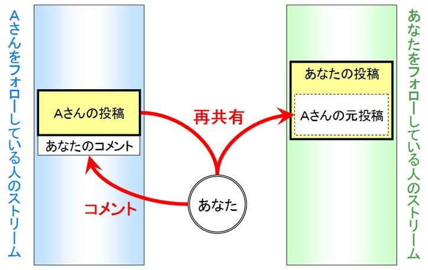
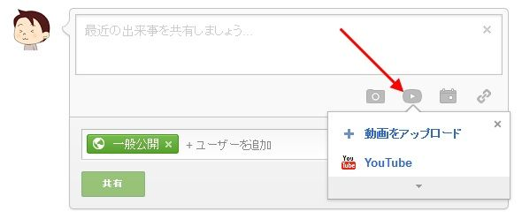
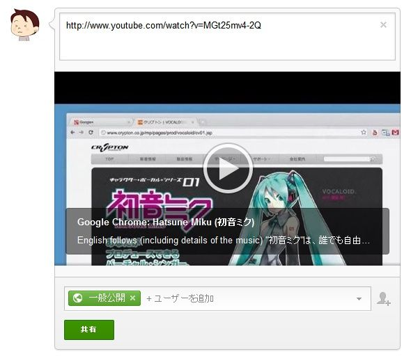
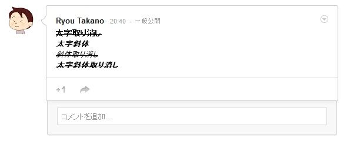
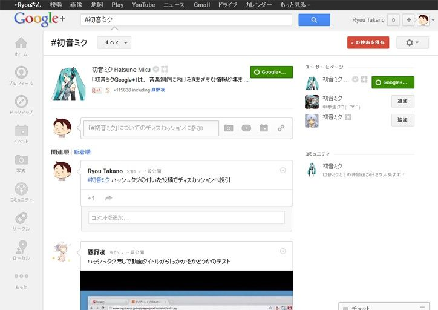
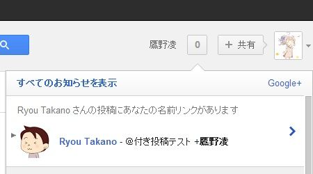
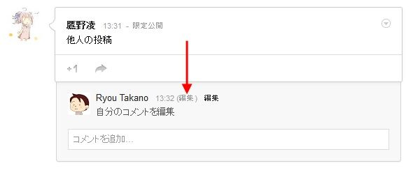
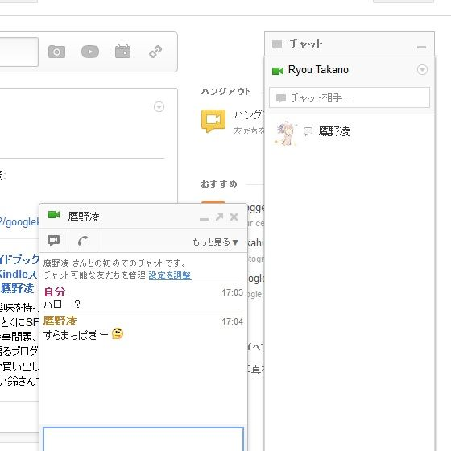
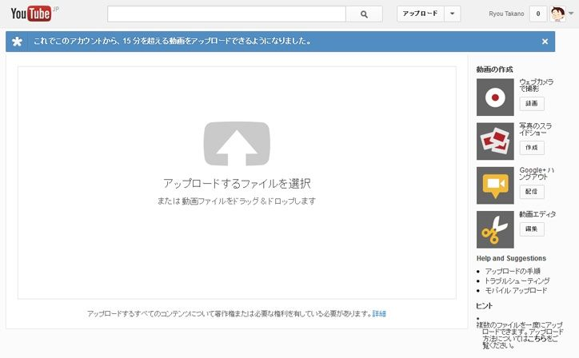
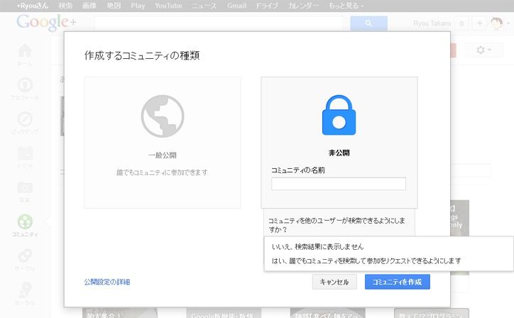

| これもうきっとGoogle+ガイドブック 3.情報発信編 | |
| 鷹野凌 @ryou_takano | |
| MITEARUKUMONO (2013) | |
Google+をこれから始めようと思っている人や、使っているけどよく判らないという人向けの、非公式ガイドブックです。題名は「これから始める人にも、もう始めている人にも、きっと役立つためになる（と思う）」の略です。全6巻の3巻目で、一般公開・限定公開などの仕様や、投稿・コメント方法、ハングアウト・コミュニティなどを利用した情報発信についての解説になっています。
Creative Commons licenses
Some rights reserved by Ryou Takano.

この書籍はクリエイティブ・コモンズ「表示 - 非営利 - 継承 2.1 日本 」ライセンスの下に提供されています。あなたは以下の条件に従う場合に限り、自由に本書籍の内容（※鷹野凌が著作権を持っているものに限ります）を転載、複製、頒布、展示、実演、二次的著作物の作成ができます。
- 表示――あなたは原著作者のクレジットを表示しなければなりません。
- 非営利――あなたは本書籍の内容を営利目的で利用してはなりません。
- 継承―― もしあなたが本書籍の内容を改変、変形または加工した場合、あなたはその結果生じた作品を本書籍と同一の許諾条件の下でのみ頒布することができます。
ただし原著作者から別途許可を得た場合は、上記の許諾条件は適用されません。
第4章 Google+で情報を発信しよう
この章では、Google+で情報を発信する方法や注意点について述べていきます。情報収集は受け取るだけの一方的な行為ですが、情報発信は双方向になります。情報収集だけをしている場合に比べると、注意すべき点が飛躍的 に増えます。しかし、双方向なやり取りこそが、SNSの醍醐味 です。

※当書籍の内容は執筆時点のものであり、Googleの開発速度は猛烈に早いため、画面イメージや仕様が現状と異なっている場合があることをあらかじめご了承下さい。
（1）一般公開と限定公開の違い
Google+で情報発信を行う際に、必ず念頭に入れておくべきことがあります。それが一般公開と限定公開の違い です。第3章で、Google+の投稿には一般公開、限定公開、友だちの友だちの3種類があるという説明をしましたが、友だちの友だちは限定公開の一種なので、ここでは一般公開と限定公開の違いに絞って説明します。
一般公開で投稿をすると、即座にGoogleにインデックスされ、全世界の誰もが見られる状態になります。あなたの一般公開投稿を見られるのは、あなたをフォローしている人だけではありません。つまり、一般公開の投稿はパブリックなもの ということです。試しにGoogleで、自分の名前と一般公開で投稿した内容をキーワードにして検索してみてください。
逆に、限定公開の場合、あなたが指定したサークル以外の人には見えません。つまり、限定公開の投稿はプライベートなもの ということです。Googleで検索をしても、上図のような形で出てくることはありません。
要するに、一般公開と限定公開は全く意味合いが違う ということです。これを認識していない人によって時々、「無断公開された！」というトラブルが起きます。一般には公開したくないから限定公開にしているのに、無断で公開されてはたまりませんよね。
（2）限定公開の仕様を理解しておこう
Google+のサークルは相互承認ではなく非対称なので、人のつながり方は4パターンあります。
- 相手が一方的にあなたをサークルに入れている （Aさんとの関係）
- あなたと相手が相互にサークルへ入れている （Bさんとの関係）
- あなたが一方的に相手をサークルに入れている（Cさんとの関係）
- どちらもサークルに入れていない状態（Dさんとの関係）
このような関係になっていた時に、あなたが一般公開の投稿をすると、その投稿はAさんとBさんのストリームには流れますが、CさんとDさんのストリームには流れません。ただし、全世界に向けて発信をしている状態なので、CさんもDさんも、その気になればその投稿を読むことができます。
問題は、あなたがBさんとCさんを入れている「友だち」サークルへ向けて限定公開の投稿をした場合です。AさんとDさんはもちろん、その投稿を見ることができません。そして、Bさんのストリームにその投稿は流れますが、Cさんのストリームには流れません 。Google+の仕様としては、自分の見たい情報発信者だけをサークルに入れるというのが原則になっているので、いくらあなたがCさんへ向けて投稿をしても、Cさんがあなたをサークルに入れなければストリームには流れないようになっているのです。
ただし、Cさんはあなたの「友だち」サークル限定公開の投稿が見えないわけではありません。Cさんがあなたのプロフィールページを見たり、Google+内検索をした時に引っかかってくれば、あなたが「友だち」サークル限定公開で流した投稿を見ることができるのです。要するに、Cさんはその気になれば読める ということです。
では、「友だち」サークル限定公開の投稿を行った後に、Dさんを「友だち」サークルに追加するとどうなるでしょう？実はこの場合、CさんとDさんは全く同じ状況になります。つまり、過去に「友だち」サークル限定公開で投稿した内容を、Dさんはあなたのプロフィールページで見ることができるのです。だからもし過去に「友だち」サークル限定でDさんの悪口を書いて、それをすっかり忘れてDさんを「友だち」サークルに追加してしまったら、Dさんがそれに気づいてしまう可能性があるということです。
では、最初の状態から「友だち」サークル限定公開の投稿を行った後に、Cさんを「友だち」サークルから削除するとどうなるでしょう？過去に「友だち」サークル限定で公開した投稿は、Cさんを「友だち」サークルから削除した時点で、Cさんは読むことができなくなります。つまり、限定公開の範囲はどのサークルを対象にしたかに依存する ということです。ただし、今この投稿は誰に見られる状態なのかは投稿の［限定公開］リンクをクリックすれば確認できますが、「どのサークル宛に投稿したか？」を確認する方法は現状では存在しません。
人数が多いサークル宛に限定公開投稿をすると、誰が見られる状態なのか、誰が見られないのを把握するのが難しくなってきますので、注意が必要です。
「友だちの友だち」サークルについて補足しておきます。この公開範囲は「あなたがサークルに入れている人 」と、「あなたがサークルに入れている人」がサークルに入れている人 という限定公開です。一般公開とは違い、Googleにインデックスされることはありません。
ただし、相手が「友だちの友だち」サークル向けに投稿した場合、自分が相手をサークルに入れていたとしても、相手が自分をサークルに入れていなければ、自分のストリームにその投稿は流れません 。検索にも引っかかりません。相手のプロフィールページだけで見られる形になります。つまり「友だちの友だち」サークル向け投稿は、公開範囲はとても広いけど、普通に読んでもらえるのは相互フォローの相手のみということです。
上図の状態であなたが「友だちの友だち」サークル向けに投稿すると、公開範囲は点線ですが、投稿が流れるのはBさんのストリームだけ です。なお、相手をサークルに入れていても、プロフィールページの［××人をサークルに追加］の公開設定を変更して表示しないようにしていると、「友だちの友だち」の公開範囲外になります。
Tips: 壁の花メソッド
パーティー会場で、壁を背にして誰ともしゃべらない人は「壁の花」と呼ばれます。こういう人は「どうして誰も私に話し掛けてくれないんだろう？」と思うだけで、自分から話しかけようとはしない傾向があります。話の輪ができて楽しそうな様子を、うらやましそうにただ眺めているだけ。何のためにパーティーへ参加しているのかまったくわかりません。
ではGoogle+のような場所ではどうでしょう？ 残念ながら、情報を発信しない人は、その存在を他の人に認知してもらえません 。もちろん名前やプロフィールを登録すれば、他の人の目に留まる可能性はあります。もしかしたらキーワードから検索してもらえるかもしれません。それはプロフィールという情報を発信しているからです。
Twitterのタイムラインや、Google+のストリームなどを「眺めているだけでも楽しい」というのは、決して間違いではありません。ただ、SNSを一部しか楽しんでいないとも言えます。例えるなら、電話を会話のためのツールとして使うのではなく、一方的に相手の言うことを聞くだけに使うのと同じです。それはもはや電話ではなく、ラジオです。もちろん、テレビや映画を観る、ラジオを聞く、小説や漫画を読むといった行為の楽しさを否定するつもりはありません。ただ、SNSの本当の楽しさは人との交流にある と私は思うのです。
積極的に情報発信する人の周りに人は集まります。そして、集まった人たちがいろんな情報を提供してくれるようになります。つまり、情報は発信する人の所に集まる のです。逆説的ですが、効果的な情報収集をしたいのであれば、積極的に情報発信することです。
（※写真は「写真素材 足成 」のフリーフォト素材を使用）（3）サークルを指定して投稿してみよう
第2章の最後では一般公開投稿をやってみましたが、今度はサークルを指定して限定公開投稿をしてみましょう。実は、前回の投稿時に指定した宛先はそのまま次回にも保持されるため、このままだと一般公開投稿になってしまいます。
まず投稿欄を開き、ひとまず投稿内容を入力しましょう。投稿内容が入力できたら、宛先欄に表示されている［一般公開］のアイコンの右端にある×をクリックします。
×をクリックすると宛先が消えますので、再度宛先欄をクリックします。
宛先候補一覧が表示されます。今回は［あなたのサークル］宛に共有してみましょう。
［あなたのサークル］が宛先に指定できました。宛先は複数指定できますが、ここではそのまま［共有］ボタンをクリックしましょう。
これで限定公開投稿がストリームに共有されました。ちゃんと［限定公開］と記されていますね。ここをクリックすると、誰に公開しているかを確認できます。
ただし、ここに表示されるのは最大21人までです。公開範囲が21人を超えている場合は、人数が表示されます。
（4）コメントしよう
気になる投稿がストリームに流れてきたら、コメントを書いてみましょう。コメントは情報発信の一種であり、相手に自分の存在を伝える手段でもあります。残酷 なようですが、あなたがいくらストリームへ投稿しても、フォロワーがいなければあなたの投稿は誰の目にも触れない可能性が高い です。つまり、誰かの投稿へコメントすることこそが、真のGoogle+での活動開始と言っていいでしょう。そして、コメントのやり取りこそが、Google+の醍醐味 だと私は考えています。賛同 、賞賛 、異論 、反論 、などなど、最初は勇気がいると思いますが、思い切って声をかけてみましょう。

ただ、投稿内容と無関係なコメントはやめましょう。宣伝行為やスパム行為とみなされ、不正行為報告をされたり、コメントを削除されたり、ブロックされてしまう可能性すらあります。
なお、コメントの公開範囲は、コメントを付けた投稿の公開範囲に依存 します。一般公開投稿へのコメントは一般公開扱いになりますので、誰でも見られる状態になります。仮にあなたがAさんの限定公開投稿へコメントをすると、そのコメントはAさんの投稿の公開範囲の人が見られる状態になります。しかし、あなたをフォローしていてもAさんをフォローしていない人は、Aさんの投稿に付けたあなたのコメントは見られません 。
（5）再共有しよう
ストリームに流れてきた投稿に刺激され、その投稿を自分のフォロワーに紹介したり、自分の意見を自分のフォロワーに向けて伝えたい場合は、コメントより再共有の方が適しています。
Aさんの投稿に対するコメントは、Aさんの投稿にぶらさがる形になり、Aさんをフォローしている人に見られる形になります（左）。しかし、あなたがＡさんの投稿を再共有した場合は、Aさんの投稿を引用したあなたの投稿として、あなたをフォローしている人のストリームに流れる 形になります（右）。また、再共有した投稿は、あなたの投稿履歴に残ります。ただし、あなたの再共有投稿がさらに再共有された場合は、あなたの書いた文章ではなく、Aさんの元投稿の内容が再共有先に反映されます。
再共有する際は、投稿の左下にある共有アイコンをクリックします。
すると、元投稿を引用した形の、コメント入力欄が表示されます。
通常の投稿と同じように、公開範囲の変更もできます。一般公開の再共有投稿には、元投稿へのリンクが［投稿］という文字のところに貼られます。このリンクは限定公開の再共有投稿には表示されません。
また、限定公開投稿を再共有しようとすると、このような警告表示が出ます。
限定公開の再共有は宛先欄で［一般公開］が選択できないため、一般公開での再共有はできません。しかし、限定公開であれば可能です。つまり、投稿主の意思とは無関係に、公開範囲を変えてしまうことが可能 なのです。ただ、再共有できないようにする［投稿ロック］という機能もちゃんと用意されています。詳しくは後述します。
再共有防止策が用意されているとはいえ、限定公開投稿の再共有はなるべく避けた方がいい と思います。何のために限定公開投稿にしているかを考えれば、それは自明の理でしょう。どうしても再共有したい場合は、投稿主に確認をとってからにしましょう。そういった配慮が、円滑な人間関係づくりに役立ちます。なお、自分自身の投稿であれば、限定公開であっても、再共有時に一般公開できます。
（6）+1しよう
「あ、この投稿いいな」とか、「このコメントいいな」と感じたら+1しましょう。その投稿やコメントへの賛意・賛同を1クリックで示すことができます。あなたが+1した投稿やコメントのボタンは赤くなります。もう1回押すと取消できます。Facebookの「いいね！」とは異なり、+1した情報がストリームへ流れることはありません。
また、コメントの+1カウントをクリックすると、誰が+1したのかが見られます。
ときどき「読んだ」というチェックのつもりで+1を押す方がいますが、連続で+1をすると相手に迷惑がかかるかもしれないということを頭に入れておいて下さい。ブロック・除外・ミュートをされていない限り、+1の通知は必ず相手に届く仕様 になっています。そして、+1するたびに通知が届きます。そのため、複数の投稿に対し連続で+1を押されると、突然通知の数字が跳ね上がります。
なんだなんだ？と通知を開くと......
......なにごともほどほどが一番ですね。
（7）画像が貼れる、アルバムで管理できる
さてここからは、文章以外の投稿のやり方について説明していきます。
まず、画像の貼り方です。実は、Google+の投稿欄は、ドラッグ＆ドロップに対応 しているので、とても簡単です。
貼り付ける枚数や、ファイルサイズに制限はありません。ただし、2048×2048ピクセルより大きい画像は、Google+へアップロードする際に自動縮小されます。
いくら枚数に制限がないとはいえ、1つの投稿に膨大 な枚数の写真を貼り付けると、最後まで見てもらえない可能性が高くなります。例えば、Google+の投稿へはサンプルを数枚貼り付けて、「あとはブログで一覧できます」といった形で誘導した方が親切でしょう。
ただし、画像を貼り付けた後から更にURLを貼り付けても、そのURLのサムネイルやタイトルは表示されません。投稿下部に表示されるのは、画像、動画、URLなどのうち一種類だけです。
なお、一部のブラウザはドラッグ＆ドロップに対応していません。
また、普通に画像を貼り付けて投稿した場合は、すべて［投稿からの写真］というアルバムに収録されてしまう ため、後から探し出すのが面倒だったりします。
ちゃんと整理しておきたい場合は、投稿欄右側のカメラアイコンをクリックし、［アルバムを作成］を選択します。
こちらで、好きな名前を付けたアルバムを作成できます。
アルバムを作成しておけば、投稿後にも同じアルバムへ写真を追加できます。アルバムごとストリームへ投稿したり、アルバムの中の1枚だけ投稿したりできます。
なお、Google+の［投稿からの写真］アルバムは、1000枚までしか表示されない仕様になっています。1000枚を超えた分は、古い画像から順に［投稿からの写真］アルバムからは見えなくなってしまうのですが、消えたわけではありません。見えなくなった分は、Picasa ウェブ アルバム に保管されています。
（8）画像を編集加工できる
画像を投稿欄に貼りつけると、下にメニューが表示されます。［名前タグを付ける］は、写真に写っている人を判別するための機能（顔認識機能がオンになっている必要があります）、［さらに追加］は画像追加、［すべて削除］は画像貼り付けの中止です。
［テキストを追加］では、画像の上にキャプションが追加できます。ただしこれが利用できるのは、画像が1枚のときだけです。
また、非常に簡易的なテキスト追加機能なので、文字の色や大きさは変更できません。フォントの変更（右上）は日本語に対応していません。
［写真を編集］をクリックすると、現時点でその投稿にアップロードしている画像またはアルバムが、一覧で表示されます。
ここで画像にマウスカーソルを重ねると、画像の下部にメニューが表示されます。
メニューアイコンは左から順に、左回転、右回転、編集、削除です。下部の［説明を追加］では、写真の上ではなく外にキャプションが付けられます。このキャプションは、拡大画面でのみ表示されます。
編集アイコンをクリックすると、画像に対しさまざまな編集加工ができるツールが開きます。
［基本編集］では、トリミング（切り抜き）、回転、露出 調整、色調調整、シャープ、サイズ変更ができます。露出や色調は、自動修正もできます。加工の取り消しや、やり直しもできます。
［効果］では、モノクロやブースト、色付け、LOMO風・HDR風・ポラロイド風といった加工、汚れの修正、てかり消し、エアブラシなどが使えます。
［装飾 ］では、いたずら書きや吹き出し、焦点ピクセル化（モザイク）や、ひげ・王冠・ハートマークなどのオブジェを載せる加工ができます。大きさや角度、ブレンドモードや色の指定、フェードなども細かく指定できます。
［テキスト］では、色や大きさやフォントを細かく指定できるテキスト編集ができます。
ここまでのレタッチ機能がブラウザ上で、しかも無料で使えてしまうというのは、本当に凄 いことだと思います。そしてなんとこのツールは、投稿後にも利用可能 です。
写真拡大画面の左上にある［写真を編集］で、投稿後の編集ができます。例えば、投稿後に写っていはいけないモノが写ってしまっていることに気づいたような場合に、投稿や写真を消してしまうのではなく、この［写真を編集］からモザイクをかけたり、マスクを被せたりすることで修正するようなことも可能です。また、カバー写真が大きすぎると思う場合は、この［写真を編集］からトリミングできます。
（9）URLを貼るときサムネイル画像が選択できる
投稿にはURLを貼って、サムネイル画像、タイトル、概要文が表示できます。このアイコンをクリックすると、URL入力欄が開きます。
ここへURLを入力します。

URLを入力すると、サムネイル画像、タイトル、概要が自動的に生成されます。ただしサムネイル画像は、そのURLに画像が存在しない場合や、そのサイトが外部からの画像参照を禁止している場合は表示されません。
画像や動画などを何も添付していない状態で本文中に直接URLを記述した場合も同じように、サムネイル画像、タイトル、概要文が自動的に生成されます。また、生成された下部にマウスカーソルを重ねると、メニューが表示されます。
- 複数のサムネイル画像候補がある場合、このアイコンで切り替えられます。
- サムネイル画像なしの投稿にします。
- 概要文を非表示にします。
- サムネイル画像、タイトル、概要文をすべて消去します。
サムネイル画像は、投稿内容やURLをわかりやすく表現するモノを使用するといいでしょう。例えばAmazonのURLを貼ると、最初に表示されるサムネイルは必ずこのような画像になります。
このまま投稿してしまうといまいちインパクトがありませんので、サムネイルを切り替えましょう。マウスカーソルを重ねると、サムネイル切り替えと消去のアイコンが、重なって表示されています。うまく右向き三角をクリックしましょう。
印象が全く違いますね！
（10）動画が貼れる
投稿には動画も貼れます。画像を貼り付ける場合と同じように、ドラッグ＆ドロップに対応しています。
ドラッグ＆ドロップ未対応のブラウザの場合は、投稿欄右側のアイコンからアップロードしましょう。
動画を貼り付けると、このような表示になります。
ストリームへ投稿しても、再生できるようになるまで少しだけ時間がかかります。サムネイルが動画のものへ切り替われば、再生できるようになります。
Google+への動画投稿では編集加工が全くできませんので、簡易的なものだと捉えておいた方がいいでしょう。YouTube の方が圧倒的に利便性は高いです。
（11）YouTube動画が貼れる
Google+の投稿欄にある［YouTube］からは、YouTube動画の検索貼り付け、URL貼り付け、自分のYouTube投稿動画からの貼り付けができます。
投稿欄へYouTube動画のURLを貼り付ける形でもOKです。
ちなみにこの動画 は、「初音ミク」さんを活用して様々な作品を生み出しているクリエイターをテーマにした、Google ChromeのCMです。Consumer Generated Media（CGM）で世界がこんなに盛り上がっている！というイメージが表現された、非常に素晴らしい動画だと思います。
YouTubeの画面からは、再生開始時間を指定した投稿もできます。動画の下にある［共有］をクリックし、［開始位置］の左にチェックを付けて時間を指定し、Google+のアイコンをクリックすれば、そのYouTube動画を貼り付けた状態のGoogle+投稿欄が開きます。

自分でYouTubeへアップロードする場合は、サムネイルの選択ができます。
ここでは詳細は省 かせて頂きますが、YouTubeの［動画の管理］メニューから［編集］で、トリミングや明るさ・色調補正などの編集加工機能が利用できます。投稿後でも編集できますし、再生回数などの統計情報もあります。だから、自分が撮った動画をGoogle+で共有したい場合は、YouTubeを経由した方がいいと思います。
Tips: 著作権を守ろう
Google+の投稿には、文章だけではなく画像や動画などが貼り付けられます。問題は、その文章や画像や動画が著作権侵害をしている場合です。
例えば、Google+にアップロードされた動画を気に入って、自分のパソコンにダウンロードしたとします。その動画が著作権者に無断でアップロードされた違法ファイルだという事実を知っていてダウンロードした場合は、著作権法第30条第1項第2号で定められた「私的使用」の例外規定により違法行為となる可能性があります。
著作権者自身がアップロードした適法ファイルのダウンロードは、私的使用の範疇 なので違法ではありません。しかし、それを再度インターネット上へ勝手にアップロードする行為は、公衆送信権の侵害ということになり、これも違法行為となる可能性があります。出典が明示されていない場合は「作者不明」のファイルをインターネットの海へ放り込んでしまう状態になります。
イラストを描いた本人は、自分の知らない所で「誰の描いたものか判らないイラスト」という形で流通することを望むでしょうか？ 写真を撮った本人は、自分の知らない所で「誰が撮ったか判らない写真」という形で流通することを望むでしょうか？ もちろん答えはノーです。イラストや写真を評価してもらうのと同時に、自分自身も評価されたいのは当然のことです。
日本の著作権法は親告罪 なので、著作権者から訴えられない限り、損害賠償や刑事罰といった事態にはなりません。が、まずはそういった行為は著作権者の心象 次第で違法になる ということを認識しましょう。自分がそのファイルの著作権者ではない場合は、画像や動画のファイルをパソコンからGoogle+へ直接アップロードするのではなく、作者自身がアップロードしているサイトへハイパーリンクを貼る ことによって紹介する方法をお勧めします。投稿へURLを貼ればサムネイルが自動表示されますので、どういう画像か知らせられますし、作者のサイトへ誘導を図ることもできます。
日本の著作権法が世界的に見ても非常に厳しく、インターネット時代に対応しきれていない状態になっているのは確かです。例えば、アメリカには存在する「フェアユース規定」を日本の著作権法にも盛り込もうという議論があったのですが、実際に出てきた改正案ではいつの間にか骨抜きの状態になってしまいました。逆に、ほとんど議論されていない違法ダウンロード刑事罰化が追加され、あっという間に施行まで至ってしまいました。規制は厳しくする方向にばかり進んでいます。詳しくは山田奨治さん著「日本の著作権はなぜこんなに厳しいのか 」をご参照下さい。ただ、「悪法もまた法なり」なのです。法として定められている限り、守らなければならないのです。
（12）Googleドライブから共有できる
Google+には、Googleドライブ からの共有もできます。
例えば、このような文書を作成したとします。右上の［共有］ボタンをクリックします。
共有設定が開きますので、Google+アイコンをクリックします。
すると、公開設定を変更するよう促されます。
［一般公開］か［リンクを知っている全員（推奨）］に変更したら、左下の［Google+で共有］をクリックします。
すると、Google+への投稿欄が開きます。
共有の手順は、スプレッドシートやプレゼンテーションやフォームでも同じです。
共有するドキュメントを他の人でも編集できるようにする場合は、［共有設定］で［閲覧者▼］をクリックします。
ここで［共同編集者］を選択すれば、設定している公開範囲の人へ編集権限が付与されます。また、Google+へ共有した後からでも、この［共有設定］から閲覧できないよう変更できます。
（13）GooglePlayなどから共有できる
Google+には、GooglePlayのアプリや書籍や映画などを共有できます。
例えば映画の場合、左側に+1ボタンが付いています。
+1ボタンをクリックすると、Google+への投稿欄が開きます。
ちなみにこれは、Google+の外に設置してある+1すべてに共通する挙動です。つまり、URLをGoogle+の投稿欄に貼り付けなくても、+1ボタンから簡単に共有できる というわけです。
GooglePlayからの投稿は、右下にロゴが入ります。映画の場合は、とくに購入ボタンなどは表示されませんが、アプリの場合は自動的に［インストール］ボタンが表示されます。
ちなみにこれは、Snapseed というモバイル用の写真編集アプリです。非常に高機能ですが、無料で利用できます。
（14）サークルが共有できる
第3章でも触れましたが、誰かを追加しているサークルのメニューには、このようなアイコンが表示されます。こちらのアイコンをクリックすると、そのサークルをストリームに共有できます。共有しても、サークルの名前や説明文は他の人にはわからないようになっています。
例えばこのように、公式Google+ページだけのサークルを作っておけば、ストリームで「こういう公式Google+ページがあるんだよ」という紹介ができます。「◯◯が好きな人サークル作っています。定期的に情報を流しますので、サークルに加えて欲しい人はこの投稿にコメントして下さい。」というような投稿を見かけることもあります。なお、共有サークルに自分を含めることもできます。
ただ、本人が一般公開していない情報や属性に基いてサークルを作って共有すると、そういった個人情報や属性情報を勝手にバラされたくない人に怒られるかも しれません。自分だけのサークルとして管理するのであれば問題ありませんが、それを共有する場合は注意が必要です。
（15）文字装飾ができる
投稿する文章には、太字・斜体・取り消し線の、文字装飾ができます。
- 太字：前後を半角の*（アスタリスク）で挟 む。
- 斜体：前後を半角の_（アンダーバー）で挟む。
- 打ち消し線：前後を半角の-（マイナス）で挟む。
太字は特に強調したい場所に、斜体は引用文に、打ち消し線は再編集した場所に用いると、わかりやすくていいと思います。
文中で文字装飾する場合は、装飾記号の前後に半角文字が必要です。半角スペースを使うといいでしょう。
また、挟みこむ途中で改行をすると、挟み込んだことにはなりません。
これらの装飾は、複数同時に利用できます。また、コメントでも利用できます。もっとも、文字装飾は使い過ぎるとかえって読みづらくなりますので、ここぞというところで効果的に用いましょう。
（16）ハッシュタグが付けられる
投稿やコメントで、ハッシュタグを付けることができます。半角#に続けて文字を入力すると、このようにハッシュタグの候補が出てきます。日本語にも対応しています。
候補から選択するか、自分でキーワードを最後まで入力すると、ハッシュタグになります。
ハッシュタグはリンクになっています。また、コメント欄でもハッシュタグは使えます。
ハッシュタグをクリックすると、検索結果一覧の画面になります。ハッシュタグの付いた投稿だけではなく、そのハッシュタグと同じキーワードが含まれる投稿も検索に引っかかってきます。ハッシュタグ付きの投稿から共通の話題に誘引したり、後から共通の話題を検索したりする時に便利です。
（17）＠付き投稿・コメントや直接共有で通知が送れる
投稿するときに、半角の@または+に続けてユーザー名を入力 すると、そのユーザー宛に通知を送る投稿ができます。これはコメントからでも可能です。
表示された候補から選択をすると、投稿欄には青文字で表示されます。
＠付き投稿の通知には「あなたの名前リンクがあります」と表示されます。
相手にどうしてもこの投稿を見てもらいたい場合には効果的ですが、あまり頻繁に用いるとうっとうしがられるので気をつけましょう。また、相手がアカウント設定で「お知らせをあなたに送信できるユーザー」の範囲を制限していて、あなたがその対象外になっている場合は通知が届きません。
相手に通知を送る投稿には、直接共有という方法もあります。本文ではなく宛先欄で、通知を送りたい相手の名前を入力します。
表示された候補から選択をすると、宛先欄に青いアイコンで表示されます。
通知には「××さんが投稿をあなたと直接共有しました」と表示されます。
また、直接共有による通知は、サークル単位でも可能です。宛先にサークルを指定すると、右下に「××にメールも送信する」というチェックボックスが表示されます。
ここにチェックを入れて共有すると、そのサークルに入れている全員へ通知が飛びます。なお、100人以上のサークルを宛先に指定した場合はチェックボックスが表示されません。
＠付き投稿と同様に、相手を通知によって呼び出す形になるので、どうしてもその相手に伝えたいことがある場合以外は使わない方がいい と思います。頻繁 に使うと、確実にうっとうしがられます。逆の立場で考えてみてください。例えば、まったく見ず知らずの人から、通知付きの投稿やコメントが届いたらあなたはどうしますか？
（18）＠付きコメントは公開範囲が広がる
＠付きコメントは、投稿の公開範囲を広げられてしまう 場合があります。この投稿を見られるのは、現時点ではこの二人だけです。
しかし、コメントで第三者を＠付きで呼びだすと、公開範囲が広がります。
公開範囲を確認すると、最初は二人だけだったのに、三人に変わっています。
つまり、二人だけでナイショ話をしているつもりが、勝手に第三者を呼びだされてしまう可能性があるのです。なお、この方法で広げられた公開範囲は、サークル操作で変更することができません。また、コメントを削除しても公開範囲はそのままです。公開範囲が広がってしまった後では、投稿を削除する以外ありません。
（19）投稿ロックとコメント無効で自衛できる
再共有や＠付きコメントは、事前に防ぐ方法が用意されています。それが投稿ロック です。投稿前に宛先欄の右端にある▼をクリックすると、コメント無効と投稿ロックのメニューが表示されます。ちなみにこれらの機能は、公開範囲に関係なく利用可能です。
［この投稿をロック］にすると、鍵アイコンが付きます。
ロックした投稿は、再共有や＠付きコメントができなくなります。
また、コメントを無効にもできます。

コメント無効にした投稿からは、コメント入力欄が消えます。
投稿ロックとコメント無効を、両方指定することも可能です。
また、投稿ロックとコメント無効は、投稿後でも設定できます。投稿後に右上の▼をクリックすると、メニューが開きます。
もちろんコメントが付いた後でも、コメント無効にできます。
無効にする前のコメントはそのまま残ります。
例えば私は、自分の投稿にコメントが欲しいわけではなく、リンク先にコメントを付けて欲しい場合 に、コメント無効を利用します。
（20）自分の投稿やコメントは編集・削除ができる
自分の投稿右上▼メニューは、他人の投稿の場合と中身が違います。投稿ロックやコメント無効以外に、編集・削除のメニューが用意されています。
TwitterやFacebookは投稿後の修正ができないので削除して投稿し直すしかないのですが、Google+では投稿後に再編集できます 。私はおっちょこちょいなので、よく誤字や脱字をやってしまいます。しかし、コメントや+1が付いてから投稿を削除してしまうのは申し訳ないですし、コメント次第で追記したいような場合も出てきます。だから、投稿後の再編集は、とてもありがたい機能です。他のサービスで再編集機能が無いのが、とても不思議に感じられます。
ただし、編集した痕跡 は残ります。例えばコメントが付いてから書き換えて、コメントの意味が判らなくなるような真似をしても、（編集）と表示されているので、他の人から見ても「あ、コメントで指摘されて書き直したんだな」というのがわかるようになっています。うまくできてますね。
また、自分の投稿は削除できます。投稿を削除したい場合というのはそれなりの理由があってのことだと思いますが、削除した投稿は復旧できませんので注意しましょう。

自分のコメントも、編集・削除できます。この［編集］をクリックすると、編集欄が開きます。
［コメントを削除］でコメントが消えます。
投稿を編集した場合と同様、コメントを編集した場合も（編集）という表示が付きます。
少しややこしいのは、投稿が再共有された後に編集や削除を行う場合です。再共有投稿に表示される元投稿の内容は、再共有を行った時点のもの です。そして、再共有後に元投稿が編集されても、再共有先には反映されません。また、元投稿が削除されても、再共有投稿はそのまま残ります。つまり、再共有された瞬間に、その投稿はあなたの投稿ではなくなってしまうのです。
元投稿へのリンクをクリックすると......
元投稿はすでに存在していません。こうなってしまった後では、再共有した人に投稿の削除をお願いするしかありません。しかし、自分の投稿を先に削除してしまうと、誰が再共有したかわからなくなってしまう のです。だから、もし自分の投稿が再共有された後に削除したい場合は、まずそれ以上再共有されるのを防止するため投稿ロックをし、その時点で誰が再共有したかをメモした後で、投稿を削除、再共有した人に削除を依頼という手順を踏むといいと思います。少し面倒ですが、致し方ありません。
画像を貼り付けた投稿を再共有された後に削除した場合は、画像の公開範囲は［自分だけ］に変わり、再共有先の投稿でも見えなくなるような処理が施されます。つまり、再共有されても、画像のコントロール権は自分の手元に残る のです。
投稿と画像は別の扱いになっているため、投稿を削除しても自分のアルバムに画像は残る 形になっています。そのためか、投稿を削除しても画像が見えなくなる処理が、反映されるまで時間がかかる場合があります。即座に削除したい場合は、投稿の削除後にアルバムからも削除しておきましょう。
アルバムからも削除すれば、再共有先の画像もすぐに見えなくなります。
（21）自分の投稿へのコメントは削除できる
自分の投稿に付いたコメントの場合、コメントを削除するためのアイコンが追加されます。
不快なコメントなどが付いた時の、対抗手段です。削除と同時に相手をブロックすることも可能です。
削除したコメントは復旧できませんし、コメントが付いていた痕跡 も残りません。安易 に削除をすることで、相手を怒らせてしまう可能性があるということは念頭に置いておいた方がいいでしょう。不快なコメントへの対抗手段とはいえ、行使した場合は相手との関係が壊れてしまう覚悟が必要です。
また、コメント無効やコメント削除を悪用すると、例えばコメント無効にした後で批判的なコメントだけを削除し賛辞だけを残す という工作も可能です。ただ、システム的には可能でも「批判的なコメントだけを削除」という行為は確実に反感を買いますので、確実に別の場所で批判される ことになるでしょう。そういう行為は間違いなく「炎上」の元になりますので、避けたほうがいいと思います。
（22）チャットしてみよう
ホーム画面の右端には、［サークルのユーザーとチャット］という縦長の表示欄があります。これは、ブラウザの表示領域が狭いときは、右下に隠れています。
［チャット ON］ボタンをクリックすると、お互いにチャットが有効なサークルへ入れている人 のオンライン状態が表示されようになります。
ここから文字・音声・映像を使って、1対1でのやり取りができます。文字も使えるので、マイクやカメラが無くても利用できます。実はこれはGoogle Talkというサービスで、Gmailの左下にある［チャット］と同じです。
チャットが有効なサークルは、初期設定では［あなたのサークル］になっています。この範囲は、チャット欄右上▼メニューの［プライバシー設定］から変更できます。
お互いにチャットが有効なサークルに入れている必要があるため、チャットが利用できる相手は結構狭い状態になっています。また、Google+ページはチャットが利用できません。
緑はオンライン、黄色はアイドル状態、赤は取り込み中、グレーはオフラインです。モバイルの場合は青いアイコンで表示されます。オンライン状態を非表示にしたり、チャットからログアウトすることもできます。また、チャット中の場合は白い吹き出しのアイコンになります。
オンライン・アイドル状態・取り込み中になっている人をクリックすると、チャット用の小窓が開きます。相手の名前の下のアイコンは、左がハングアウトへの切り替え、右がボイスチャットの開始です。マイクがあれば、ここから無料通話ができます。［もっと見る▼］には［ビデオチャットを開始］のメニューがあります。入力欄右下のアイコンは、絵文字です。
ここでやり取りをした履歴 は、Gmailの［チャット］フォルダに残ります。ただし、［もっと見る▼］からどちらかが［オフレコにする］に設定すれば、履歴が残らないチャットに切り替わります。なお、Google+でチャットしていてGmailに切り替えると、Gmailでも会話中のチャット小窓が表示された状態になります。
（23）ハングアウトしてみよう
ハングアウトは、同時に最大10人まで参加できる、文字・音声・映像による会話システムです。インターネットを使ったテレビ会議システム と言い換えてもいいでしょう。テレビ会議システムを販売している会社もあるというのに、無償でここまで高度なことができてしまうというのは驚きです。
［ハングアウト開始］ボタンをクリックすると、次のような画面になります。
- ハングアウトの見出しです。ハングアウト中に変更できます。
- マイクのオン／オフ切り替えです。
- カメラのオン／オフ切り替えです。
- カメラ、マイク、スピーカーの設定画面を開きます。
- ハングアウトを終了します。
- ハングアウトへ招待する相手の候補が表示されます。相互に［あなたのサークル］へ入れている人が表示されるようです。
- ハングアウトへ招待する相手の入力欄です。サークルや名前で指定ができます。
- ハングアウトから1ヶ所だけ固定電話や携帯電話に電話をかけられる機能です。アメリカ・カナダへの通話は無料ですが、それ以外の場合は有料です。緊急通話はできません。

- ここへ入力した内容が、ストリームや通知へ表示されます。
- ハングアウトオンエアへの切り替えです。
- ハングアウトのオプションで、未成年（アメリカ基準で18才）が参加できないように制限できます。
この画面で招待する相手が、最初の公開範囲になります。25人以下のサークルや名指しで指定した相手には、「××さんがハングアウトに招待しています」というお知らせが届きます。
ハングアウトの参加者は、任意で他の人を「招待」できます。もっと言えば、URLさえ判れば誰でも参加できるようになっています。また、最初に開始した人が離脱 しても、他に誰かが残っていればそのハングアウトは続きます。つまり、ハングアウトは開始した人のものではない ということです。
ハングアウトへ参加している人を、強制的に離脱させることはできません。ブロックしても、誰をブロックしたという通知が参加者全員に配信されるだけで、そのハングアウトから排除はできないのです。だから、誰をハングアウトへ招待するかはよく考えてから行いましょう。一般公開のハングアウトは全世界へ公開され誰でも参加できるので、いきなり見知らぬ海外の方が参加してくるようなこともあり得ます。
まだ自分以外誰も参加していないハングアウトの画面は、このような表示になります。
- 他の人を招待できます。
- グループチャットウィンドウを開きます。ハングアウト参加者と文章で会話できます。
- デスクトップ画面を共有します。全画面か、開いているウィンドウかを選択できます。例えば、離れたところにいる相手に画面を見せて説明をするような使い方ができます。
- ハングアウトで利用できるアプリケーションです。後述します。
- この左メニューを閉じたり開いたりできます。
- ハングアウト参加者の画面が一覧表示されます。上部に大きく表示する対象を選べます。
ハングアウトのアプリケーションはたくさんあるので、一部だけ紹介させて頂きます。Google Effectsは、効果音を鳴らしたり、画面にオブジェを表示するなど、ハングアウトにさまざまな効果を追加するツールです。カメラ映像であれば、顔にひげを付けたり、帽子をかぶせたりできます。
Google Driveは、Googleドライブのドキュメントを共有し、閲覧や共同編集ができる機能です。
単に画面を共有するだけではなく、ファイルそのものを共有してライブでファイルの中身を書き換えられます。
共同編集をするには、共同編集者の権限を付与する必要があります。編集する権限がない場合は、ハングアウト上からリクエストを送れます。ハングアウト上で付与した編集権限は、ハングアウトを終了してもそのままなので注意しましょう。ハングアウト終了後は、Googleドライブで権限を変更できます。
これ以外にも、さまざまなハングアウトアプリケーションがあります。［アプリをもっと見る］にマウスカーソルを重ねると表示される［+アプリを追加］をクリックします。
利用できるハングアウトアプリケーションの一覧が表示されます。
サードパーティ製のアプリケーションを利用する場合は、アクセスを許可する必要があります。
このHangout ToolBoxについては、ハングアウトオンエアで利用すると便利な機能が付いていますので、次の項 で改めて詳しく説明します。
（24）ハングアウトをオンエアしてみよう
［ハングアウトを開始］の画面で［ハングアウト オンエアを有効にする］にチェックを入れると、Google+のストリームとYouTubeチャンネルにライブ配信ができるようになります。ハングアウトオンエアの配信者は、視聴者数を随時 確認できます。また、オンエア終了後にはライブ配信した内容が自動的にアーカイブされ、Google+のストリームとYouTubeチャンネルから閲覧できるようになります。
こちらは堀正岳さん が毎週日曜日の夜に配信している「ライフハックLiveshow 」の画面です。
ハングアウトオンエアがUstreamやニコニコ生放送と決定的に異なるのは、最大10人まで参加できる点です。要は、複数地点やアングルからのライブ配信を簡単にできてしまう わけです。どの画面を配信するかはハングアウトオンエアを開始した人が任意で随時変更できますので、他の地点からの参加者をカメラマンとし、自分はスイッチャーという位置づけでの配信ができるということになります。
また、ハングアウトにはスマートフォンやタブレット（AndroidまたはiOS）で参加できますので、テレビ放送でよくある「現地の××さ～ん」的なことや、公開討論会や座談会などで1人づつアップにする映像配信も、特別な機器を必要としません。また、パソコン画面の共有ができますので、デジタル作業をしている様子の配信であればカメラすら必要ありません。
ハングアウトオンエアを始めるためには、YouTubeアカウントの確認 が必要です。初めて［ハングアウト オンエアを有効にする］にチェックを入れると、このようなメッセージが表示されます。［確認処理を開始］ボタンをクリックします。
確認方法は、音声かSMSです。携帯電話番号を入力し、［送信］をクリックします。

キャリアによっては、SMSはうまく受け取れない場合があります。音声通話の場合はYouTubeから電話がかかってきて、録音音声でコード番号を教えてくれます。
受け取ったコード番号を入力すれば、YouTubeアカウント確認は完了です。これで15分以上の動画がアップロードできるようになります。
［ハングアウトを開始］の画面へ戻り［確認完了。アカウントを再確認］をクリックすると、ハングアウトオンエアの追加利用規約とYouTubeの利用規約の両方に同意を求められます。同意にチェックし［続行］をクリックすれば、準備完了です。
この手順が必要なのは、最初だけです。
ハングアウトオンエアを有効にすると、［このハングアウトの名前］は必須項目になります。ここに入力したテキストが、YouTubeへ自動アーカイブされる動画のタイトルになります。
ハングアウトに招待した人は、配信されるハングアウトオンエアに参加できるようになります。例えば、自分1人でハングアウトしている状態をオンエアしたいのであれば、誰も招待せず［ハングアウトに招待］をクリックすればOKです。なお、ハングアウトオンエアでは、［一般公開］や［友だちの友だち］は招待できません。
ハングアウトオンエアを有効にしてハングアウトを開始すると、ストリームに流れる投稿は自動的にコメント無効でロックされた状態になります。つまり、この投稿は招待した人しか見えません し、勝手に再共有されて公開範囲を広げられることもありません。
また、通常のハングアウトとは異なり、ハングアウトオンエアは配信者以外［招待］ができない 状態になります。つまり、ハングアウトオンエアに誰を参加させるかは、配信者が完全にコントロールできます。「ハングアウトは誰のものでもない」ですが、「ハングアウトオンエアは配信者のもの」です。
［ハングアウトに招待］をクリックしてハングアウトを始めても、いきなりオンエアが始まるわけではありません。右上の［配信を開始］ボタンをクリックするまで、オンエア待機状態（オフエア）になっています。
また、［埋め込み］をクリックすると、ブログなどへ貼り付けられる埋め込みコードが発行できます。配信開始直前に、「これから配信します」というブログ記事を書いて告知するといった使い方ができます。
［配信を開始］ボタンをクリックすると、10秒のカウントダウン後にハングアウトオンエアが開始します。また、ハングアウトオンエアの投稿がストリームに流れます。これは一般公開投稿なので、ハングアウトオンエアの配信内容は誰でも閲覧可能 です。
また、同時にあなたのYouTubeチャンネルにもライブ配信が開始されます。
こちらももちろん、全世界の誰でも閲覧可能になっています。追加利用規約にも明記されていますが、あなたが配信するハングアウトオンエアの内容は、あなたが責任を負う形になります。これは、他のハングアウト参加者が配信する内容も同じです。誰を招待するか、何を配信するかは慎重にやりましょう。

画面上部には、閲覧者の人数が表示されます。
［配信を終了］をクリックするとライブが終わり、配信されていた内容が自動的にYouTubeへアップロードされます。
アップロード完了まで、それほど時間はかかりません。YouTubeには誰でも閲覧できる［公開］の状態でアップロードされますが、YouTubeの管理画面から限定公開（URLを知っている人だけが見られる）か、非公開（招待した人だけ見られる）に切り替えられます。つまり、ライブ配信のみという形も可能 です。
ちなみに、YouTubeの管理画面では、通常にアップロードする動画と同様に編集ができます。説明文やハッシュタグの追加、サムネイルの変更、前後の切り取りや効果の追加、YouTubeが用意している楽曲の重ね合わせ、字幕の追加などができます。

ハングアウトオンエアの画面でGoogle+やYouTubeに付いたコメントを見るには、Hangout ToolBoxを使います。配信を見ている人のコメントを、画面を切り替えずに確認できる という優れものです。ハングアウトの画面でHangout ToolBoxを起動し、右上のメニューから緑のフキダシアイコンをクリックします。
これはComment Trackerという機能です。
入力欄にハングアウトオンエアの投稿URL（パーマリンク）を貼り付けて、［Add URL］ボタンをクリックします。
これで準備ができました。次に、タブを［Stream］に切り替えます。
［Stream］タブには、先ほど登録したURLの投稿に付いたコメントが表示されます。
YouTubeからのコメントは、特に設定をしなくても表示されます。
また、［Search G+］や［Search Twitter］で、キーワードを登録できます。例えば、ハッシュタグを付けてGoogle+への投稿やツイートをしてもらうよう事前に呼びかけておけば、それも簡単に追跡できるというわけです。
なお、コメントは即座に反映するわけではありません。約1分くらい遅延します。
（25）ローカルへクチコミを投稿してみよう
「ローカル」の検索結果一覧や詳細情報のページから、そのお店（場所）に対するあなたのクチコミを書き込むことができます。検索結果一覧の場合は、こちらのペンアイコンから。
詳細情報画面の場合は、［クチコミを書く］ボタンから。
クチコミは一般公開投稿と同様に、誰でも見られる状態になります。つまり、例えば自分の家の周辺のお店ばかりを登録すると、あなたがどの辺りに住んでいるというのが丸わかりになりますので注意しましょう。
クチコミの入力欄はこのようになっています。飲食店の場合は、料理・内装・サービスの3項目について評点を付ける形です。評価対象が施設や企業の場合は、項目が異なります。
評価を選択してクチコミを入力したら、［公開］をクリックします。
すると、クチコミ情報が登録されるのと同時に、ストリームへの投稿欄が開きます。ストリームへ投稿するかどうかは選択できます 。［いいえ］をクリックするとクチコミ情報の登録のみで、ストリームへの投稿は行いません。
ローカルへ投稿したクチコミは、［マイプレイス］や［あなたのアクティビティ］から編集・削除できます。
また、お店の登録情報が間違っている場合は、Googleへ報告ができます。住所電話番号辺りにマウスカーソルを重ねると、［詳細を編集］というリンクが表示されます。

なお、このお店（場所）のオーナーの場合は、ページの管理者となって直接情報を編集できます。管理者になるにはGoogleへ書類提出などの申請手続きが必要です。こちらの詳細は、第7章で説明します。
（26）イベントを企画してみよう
イベントを作成するには、投稿欄のイベントアイコンをクリックします。このイベント作成アイコンは、コミュニティやローカルなど、他のさまざまな場所にも設置されています。
イベント作成画面は、このような表示になります。
- イベントのテーマ（カバー画像）を変更できます。Googleが用意している画像から選択するか、自分の画像をアップロードできます。
- イベントのタイトルを入力します。
- イベントの開始日時、終了日時を入力します。
- イベントを行う場所を入力します。Googleマップに登録されている場所なら、自動的にリンクが貼られます。
- イベントの内容について詳細を入力します。
- イベントへ招待する相手を選択します。
- イベントのオプションです。
イベントのオプションでは、ゲストに他のユーザーの招待を許可するかどうか、ゲストに写真の追加を許可するかどうか、ゲストリストを表示するかどうかを選択できます。

イベントのオプション詳細設定では、このイベントをハングアウトで行うかどうか、オンエアで配信するかどうか、その他の入力欄を表示するかどうかを選択できます。オンエアイベントは、招待したユーザーしか参加はできないけど、閲覧だけなら誰でもできるイベントです。ハングアウトオンエアのことではありません。
その他の入力欄を表示すると、この様な表示になります。
公式ウェブサイトのURL、チケット販売者のURL、YouTubeのURL、交通アクセスが追記できます。例えば、「ハングアウトオンエアをやります」というイベント告知をしておいて、実際にハングアウトオンエアをやる直前に［埋め込み］からYouTubeのURLを取得して貼り付ければ、イベントでハングアウトオンエアを配信できます。
入力が終わったら［招待］をクリックすると、招待状が送られます。一般公開イベントでない限り、相手には必ず通知が届きます ので注意しましょう。
また、招待状を送った相手からの回答も、必ず通知が届く仕様になっています。つまり、あまり大勢を対象に招待状を送ると、相手に嫌がられる可能性もありますし、回答通知も大変なことになりますので注意しましょう。
自分の作成したイベントでは、時間の変更などの編集やオプション設定の変更などができます。右上の［操作］ボタンか、下図の青いペンアイコンをクリックします。
時間や場所など重要な事項を変更した場合は、［いいえ］と回答した人以外の招待者全員に改めて通知が届きます。また、イベント投稿にコメントが付いた場合は、［はい］または［未定］と回答した人に通知が送られます。
また、イベントには写真をアップロードできます。［ゲストに写真の追加を許可する］設定になっていれば、招待者全員が写真をアップロードできます。アップロードされた写真はアルバムと同様、一覧表示をしたり、スライドショーを楽しむことができます。参加者みんなで思い出を共有したり、未参加者を悔しがらせられます。
（27）コミュニティに参加して投稿やコメントしてみよう
コミュニティへ参加したら、自分でも投稿やコメントをしてみましょう。ただし、第3章でも説明したように、コミュニティにはオーナーによるローカルルールが設定されている場合がある ので、必ず基本情報には目を通し、コミュニティの趣旨に沿った投稿・コメントをしましょう。
コミュニティへ参加すると、投稿の宛先にコミュニティが表示されるようになります。サークルの下にありますので、スクロールして下さい。
カテゴリが設定されているコミュニティを指定すると、どのカテゴリへ投稿するかを選択できます。
また、コミュニティでカテゴリを選択した状態で投稿欄を開くと、自動的にカテゴリが選択された状態になります。
コミュニティへの投稿は、通常のストリームへの投稿と同様に、画像や動画やURLなどを貼ることができます。また、コミュニティメンバーを対象としたイベントも立てられます。
投稿ロックやコメント無効にしたい場合は、投稿後に右上メニューから変更する形になります。
コミュニティの左側にある［操作］メニューからは、コミュニティへの招待、コミュニティをストリームへ共有、コミュニティの退会、不正行為の報告ができます。コミュニティの招待は、既にそのコミュニティへ参加している人以外には通知が届きます。過去に招待を辞退済みの人にも再度通知が届いてしまうので、招待をする際は注意しましょう。なお、招待ができるのは150人未満のサークル という制限があります。また、アカウント設定の［お知らせをあなたに送信できるユーザー］で通知を受け取る範囲を狭めている場合は、対象外からの招待は届かなくなります。
コミュニティにはオーナーとメンバー以外に、［管理メンバー］という権限があります。
管理メンバーには、オーナーと同等の非常に強い権限 があります。例えば、管理メンバーがコミュニティの投稿右上メニューを開くと、このような機能が表示されます。
Googleによって自動的にスパム判定された投稿を表示／非表示したり、コミュニティの趣旨に合わない投稿を削除したり、場合によってはメンバーの削除や参加禁止措置をするなど、コミュニティの秩序を守るための権限を持つ ことになります。また、カテゴリの編集や基本情報の編集もできますし、オーナーの投稿ですら削除可能です。オーナーにできて管理メンバーにできないのは、コミュニティの削除と、オーナー自身の削除・参加の禁止・降格だけです。
管理メンバーに昇格されるというのは、それだけオーナーから信頼されているという証でもあります。ですが、管理メンバーになりたくない場合は、自分で自分を降格 できます。
（28）コミュニティを運営してみよう
あなたが興味を持っている領域 のコミュニティが検索しても見つからない場合や、参加してみたけど雰囲気 が合わなかったり、投稿がほとんどない休眠コミュニティだった場合は、自分でコミュニティを作ってみましょう。コミュニティは誰でも作成できます。Googleの規約に反する内容でない限り、テーマはなんでも構いません。「マニアック過ぎるかも？」というような領域でも、仮にメンバーが数人であっても、同じテーマで話ができる「場」があるというのは心地いいものです。
コミュニティを作るには、［コミュニティ］ページ右上の［コミュニティを作成］ボタンをクリックします。
すると、コミュニティを一般公開にするか、限定公開（非公開）にするかの選択画面が表示されます。
一般公開の場合、誰でも自由に参加できるようにするか、参加をするのに管理メンバーの許可が必要な形にするかを選択できます。
限定公開（非公開）の場合、参加には必ず管理メンバーによる承認が必要になります。また、コミュニティが検索結果に表示されるかどうかの選択ができます。例えば、招待した人だけが参加できる秘密のコミュニティを作りたい場合は、限定公開（非公開）かつ検索結果に表示しない設定にします。
なお、限定公開（非公開）かつ検索結果に表示しない設定でも、コミュニティのURLを知っている人であればコミュニティの名前や基本情報、カテゴリ、参加メンバーの表示ができます。もちろん参加をしていない人には投稿やコメントは見えませんが、見える部分に妙なことを書いておくとバレる可能性があるということは頭に入れておきましょう。
コミュニティの一般公開／限定公開（非公開）や、承認制かどうか、検索結果に表示するかどうかといった設定は、コミュニティを作成した後からでは変更ができません 。どうしても変えたい場合は削除して作りなおすしかありませんので、どういう方向性のコミュニティにするかを慎重に考えた上で設定しましょう。
公開設定を選択し、コミュニティの名前を入力して［コミュニティを作成］ボタンをクリックすれば、コミュニティが開設できます。下図は開設直後の画面で、［編集］状態になっています。
［写真を載せる］をクリックすると、コミュニティのプロフィール画像をアップロードし、表示領域を指定できます。コミュニティ一覧やアイコンでは正方形に、コニュニティのページでは少し縦長に表示されます。
キャッチフレーズの追加、コミュニティーの写真、カテゴリの追加、基本情報の記載などが終わったら、［保存］ボタンをクリックします。すると、編集内容が保存され、このコミュニティへ招待をするための投稿欄が開きます。
ただ、この段階でいきなり招待をしても、コミュニティには投稿が何もない空っぽの状態です。招待を受けた人に「一番乗りしてみませんか？」というのは結構酷です。だから私は、誰かを招待するのは自分で何か投稿した後にした方がいい と思います。
また、自分がオーナーのコミュニティは、通知の初期設定がオンになっています。通知が必要ないばあいは、オフにしておきましょう。
自分がオーナーのコミュニティは、［操作］メニューの中身が少し違います。［コミュニティの編集］は、名前の変更や、キャッチフレーズの修正、コミュニティー画像の変更、カテゴリの編集や追加、基本情報の再編集ができます。なお、コミュニティのメンバーが500人を超えると、名前は変更できなくなります。

［メンバーを管理］では、メンバーの一覧からフォローなどのサークル管理と、コミュニティから削除（強制退会）、コミュニティへの参加を禁止、管理メンバーへの昇格ができます。コミュニティから削除などのメニューは、右端の▼をクリックすると表示されます。
コミュニティから削除された人は再参加（または参加リクエスト）できますが、参加を禁止された人は再参加（リクエスト）すらできなくなります。ただし、一般公開コミュニティの場合、参加を禁止しても閲覧は可能 です。ちなみにブロックをすればあなたの投稿は見えなくなりますが、それ以外のメンバーの投稿は見える状態のままです。
対象が管理メンバーの場合、メンバーへの降格と、オーナーに昇格ができます。管理メンバーをオーナーに昇格すると、オーナーは複数になります。仮に、忙しくてコミュティの管理ができなくなってしまったような場合に、コミュニティを放置したり削除したりするのではなく、他の人にオーナー権限を移譲するという選択肢もあるということを覚えておきましょう。
Copyright
Googleのロゴ・スクリーンショットはこちらの使用許諾に基づいて使用しています。
http://www.google.co.jp/intl/ja/permissions/
「初音ミク」はクリプトン・フューチャー・メディア株式会社のキャラクターです。
(c) Crypton Future Media, Inc.www.crypton.net
ブログ「見て歩く者」のカバー画像・プロフィール画像は、ピアプロ・キャラクター・ライセンス に基づいてクリプトン・フューチャー・メディア株式会社のキャラクター「初音ミク」を、紅い鈴さんが描いたものを許可を得て使用しています。
(c) Crypton Future Media, Inc. ／ (c) 紅い鈴
私のプロフィール画像は、樫津りんごさんに描いて頂きました。


(c) 樫津りんご
https://plus.google.com/109147348593403414073/posts/R9dn3gAr3qU
https://plus.google.com/109147348593403414073/posts/ZbRLVc1Qrzi
これもうきっとGoogle+ガイドブック 第3巻 情報発信編 奥付
コメント・感想などをお寄せ下さい。
いただいたご意見、感想、誤字・脱字・誤用などのご指摘は、今後の参考にさせて頂きます。Amazonやブクログなどへのレビューも大歓迎です。クリエイティブ・コモンズ・ライセンスなので、ガンガンに引用して頂いて構いません。
感想メールフォーム:
http://www.wildhawkfield.com/p/contact.html
○ 著者プロフィール
鷹野 凌（Ryou Takano）
小説・漫画・アニメ・ゲームなどの創作物（とくにSF）、ボカロ・東方、政治・経済・国際などの時事問題、電子書籍・SNSなどのIT関連、天文・地球物理などの先端科学分野に興味があります。
ブログ：見て歩く者http://www.wildhawkfield.com/